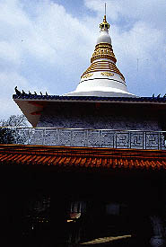
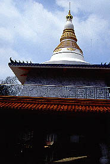
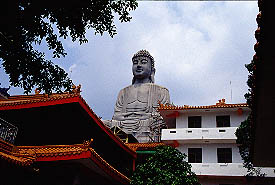
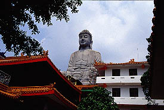

千佛山菩提寺/台南縣關廟郷
台南縣の南、關廟郷にある千佛山菩提寺は座像では台湾で一番大きいといわれる大仏さんがある寺だ。
遠景。大きな池の畔に建つ伽藍＆大仏。絵になり過ぎるほど決まっている。
ここの開山は1974年頃。建物も最近完成したらしくみんな新しい。壁の真っ白具合をみると建ってまだ数年、といったところだろう。
で、境内。だ〜れもいない。シーンとしている。しかも暑い。凄く暑い。
橙色の屋根が続く境内を大仏目指して歩いていく。といっても遠くからあれ程良く見えた大仏さんだが、境内に入ってからは建物に視界を遮られて全く見えない。
 
さらに無人の境内を歩く。するとパゴダが見えて来た。台湾にパゴダ、しかもそのパゴダの下には大理石で出来たビルマ仏が。その脇のベンチに腰を下ろす。な〜んかこの暑さ、この静けさ、ミャンマーのパゴダに来たみたいだな〜、と思いつつ上をみあげると、ありました大仏さん。どっしりと大雄宝殿（本堂）の後ろの建物の上に座っていた。

さらに無人の境内を歩く。するとパゴダが見えて来た。台湾にパゴダ、しかもそのパゴダの下には大理石で出来たビルマ仏が。その脇のベンチに腰を下ろす。な〜んかこの暑さ、この静けさ、ミャンマーのパゴダに来たみたいだな〜、と思いつつ上をみあげると、ありました大仏さん。どっしりと大雄宝殿（本堂）の後ろの建物の上に座っていた。
 
早速大仏を目指して本堂後ろの建物に行く。外階段を登り屋上へ。ありゃ、外に出られない。
もしかして中から入るのでは、と思い、一旦1階に戻り建物の中に入ってみる。しかし内部には階段がない。
また改めて外階段を登る。やはり大仏さんのいる最上階には出られない。
うむ〜、困った。と、思った時に掃除のおばさんが現れた。怪しい風体の男が勝手に建物を登ったり下りたりしているのを見てやって来たのだろうか。いぶかし気にしているおばさん、しかし私にとっては渡りに舟。大仏への行き方を訪ねる。しかしおばさん私の質問の内容が全く判らないらしく、困った様子。それでも質問を続けるとおばちゃん、尼さんがたむろしている部屋に連れていってくれた。その中に日本語が少し出来るおばちゃんがいたので大仏のところに行きたい由を告げると「あ〜、だめだめ、大仏には行けませんですよ〜」といわれてしまった。
結局、未完成でまだ行けないのか、元々大仏のお膝元まで行けない構造なのか、それとも信仰上の理由から近付けないのか、よく判らなかったがとにかく行けないと言う事であった。
で、尼さんにお茶を一杯頂き、パンフレットを貰い早々に退散した。
世に大仏数あれどすぐ近くまで近寄れなかった大仏は初めてであった。
でかいものは遠くから見るのが華、って事ですか。
確かに池のほとりに佇む大仏の図ってのは様になっていたけど・・・
ちなみに高さは約25メートル、着工は1987年との事である。

早速大仏を目指して本堂後ろの建物に行く。外階段を登り屋上へ。ありゃ、外に出られない。
もしかして中から入るのでは、と思い、一旦1階に戻り建物の中に入ってみる。しかし内部には階段がない。
また改めて外階段を登る。やはり大仏さんのいる最上階には出られない。
うむ〜、困った。と、思った時に掃除のおばさんが現れた。怪しい風体の男が勝手に建物を登ったり下りたりしているのを見てやって来たのだろうか。いぶかし気にしているおばさん、しかし私にとっては渡りに舟。大仏への行き方を訪ねる。しかしおばさん私の質問の内容が全く判らないらしく、困った様子。それでも質問を続けるとおばちゃん、尼さんがたむろしている部屋に連れていってくれた。その中に日本語が少し出来るおばちゃんがいたので大仏のところに行きたい由を告げると「あ〜、だめだめ、大仏には行けませんですよ〜」といわれてしまった。
結局、未完成でまだ行けないのか、元々大仏のお膝元まで行けない構造なのか、それとも信仰上の理由から近付けないのか、よく判らなかったがとにかく行けないと言う事であった。
で、尼さんにお茶を一杯頂き、パンフレットを貰い早々に退散した。
世に大仏数あれどすぐ近くまで近寄れなかった大仏は初めてであった。
でかいものは遠くから見るのが華、って事ですか。
確かに池のほとりに佇む大仏の図ってのは様になっていたけど・・・
ちなみに高さは約25メートル、着工は1987年との事である。

次のスポットへGO!
台湾大仏列伝2のページへ
珍寺大道場 HOME